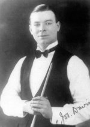

El snooker es una modalidad de billar que se juega en una mesa rectangular recubierta de tela verde y con seis troneras, una en cada esquina y una a mitad de cada una de las bandas largas. Concebido en la segunda mitad del siglo XIX por oficiales del Ejército británico destinados a la India, se juega con veintidós bolas, entre las que se encuentran una blanca, quince rojas y otras seis — una amarilla, una verde, una marrón, una azul, una rosa y una negra — que se conocen en conjunto como «los colores».

Valiéndose de un taco, los jugadores, que pueden competir de forma individual o por equipos, se van turnando tiros con el rival; el taco solo puede entrar en contacto con la bola blanca, que habrá de combinar después con otra para conducirla a la tronera e ir hilando así jugadas en un orden concreto que suman puntos. También se consigue ampliar el marcador cuando el rival comete una falta. Cada mesa la gana quien más puntos tenga, y un partido acaba cuando uno de los que se enfrentan alcanza un número predeterminado de mesas.

El Campeonato Mundial de Snooker se disputó por primera vez en 1927. Joe Davis, que dio al deporte unos primeros e importantes impulsos, ganó quince ediciones consecutivas entre aquel año y 1946. La conocida como «era moderna» arrancó en 1969: primero, la BBC encargó la serie de televisión Pot Black, y más tarde brindaría cobertura diaria al Campeonato Mundial, cuyos partidos empezaron a retransmitirse en 1978. Entre los rostros más destacados del deporte estuvieron Ray Reardon en la década de 1970, Steve Davis en la de 1980 y Stephen Hendry en la de 1990. Ronnie O'Sullivan, que irrumpió también en los años noventa, es el jugador más laureado del siglo XXI y está empatado con Hendry a títulos mundiales, con siete.
